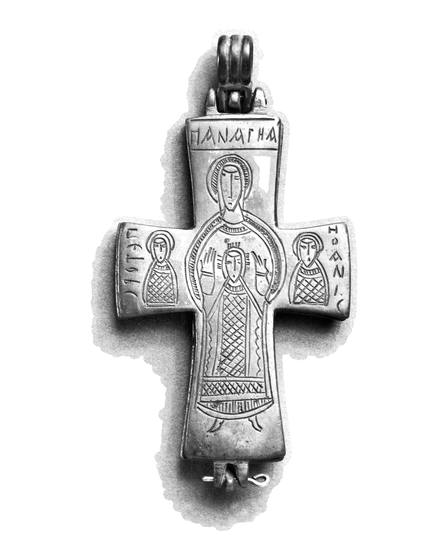

Catalog › CE-0573 · COM2026-18787265
Cruce-encolpion de bronz, Walters Art Museum 54.2367
sec. XI (1001–1100) · loc necunoscut · Walters Art Museum, Baltimore, inv. 54.2367
double-sided reliquary cross (enkolpion), bronz; c. XI (1001–1100); find spot unknown; kept at Walters Art Museum, Baltimore.


Identificare
- Categorie
- Encolpion bivalv (relicvar)
- Material
- Bronz
- Dimensiuni
- Î 120 × L 61 × Gr 11 mm
Iconografie
- Avers
- Maica Domnului cu Pruncul; Sf. Petru; Sf. Ioan
- Descriere avers
- Maica Domnului în picioare cu Pruncul, între busturile apostolilor Petru și Ioan; inscripție care o identifică drept Panagia.
- Revers
- Sf. Gheorghe
- Descriere revers
- În centru un medalion cu bustul Sf. Gheorghe.
- Inscripții
- Panagia (după descrierea muzeului)
Datare și atribuire
- Datare
- sec. XI (1001–1100)
Descoperire
- Context
- Colecție (fără context)
- Coordonate
- 39.2964° N, -76.6161° E
- Precizia locului
- Loc de păstrare (loc de descoperire incert)
Păstrare și referințe
- Colecție
- Walters Art Museum, Baltimore
- Nr. inventar
- 54.2367
- Bibliografie
- Fotografie: Walters Art Museum, Wikimedia Commons, licență Public domain, https://commons.wikimedia.org/?curid=18787265 (accesat 17.10.2026).
- Figura
- Wikimedia Commons, pagina 18787265
- Observații
- Descrierea muzeului: crucea poate fi deschisă, deci poate fi folosită pentru relicve. Provenință: Leon Grinberg (A la Vieille Russie), New York, achiziție; Walters, 1949. Fața din fotografie este cea cu Maica Domnului; sursa nu spune care față e avers. Locul descoperirii nu e cunoscut cu precizie; punctul de pe hartă marchează locul de păstrare (Walters Art Museum), nu locul descoperirii. Coordonate: nu sunt date în sursă.
Citare: Corpus Encolpiorum, CE-0573, Cruce-encolpion de bronz, Walters Art Museum 54.2367, --root/piese/COM2026-18787265/ (accesat 2026-10-17).